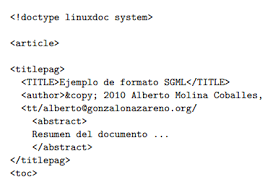
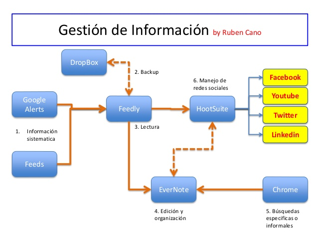
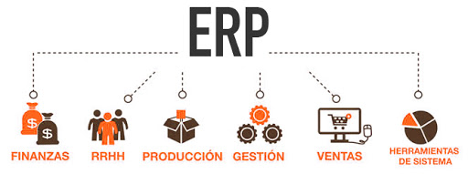
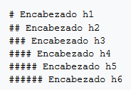
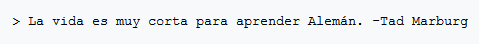
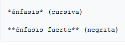
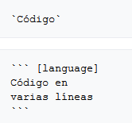
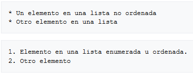
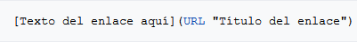
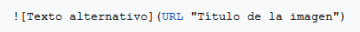

El Lenguaje de Marcas es un modo de codificar un documento donde, junto con el texto, se incorporan etiquetas con información adicona relativa a la estructura del texto o su formato de presentación.
Ejemplo:
Un sistema de información es un conjunto de datos que interactúan entre sí con un fin común. En informática, los sistemas de información ayudan a administrar, recolectar, recuperar, procesar, almacenar y distribuir información relevante para los procesos fundamentales y las particularidades de cada organización.
La importancia de un sistema de información radica en la eficiencia en la correlación de una gran cantidad de datos ingresados a través de procesos diseñados para cada área con el objetivo de producir información válida para la posterior toma de decisiones.
Ejemplo:
ERP (siglas de ‘Enterprise Resource Planning’ o ‘Planificación de Recursos Empresariales’) es un conjunto de aplicaciones de software integradas, que nos permiten automatizar la mayoría de las prácticas de negocio relacionadas con los aspectos operativos o productivos de nuestra empresa, facilitando y centralizando la información de todas las áreas que la componen: compras, producción, logística, finanzas, recursos humanos, marketing, servicios, proyectos y atención al cliente.
Ejemplo:
HTML es un lenguaje de marcado que nos permite indicar la estructura de nuestro documento mediante etiquetas.
Este lenguaje nos proporciona una gran adaptabilidad, estructura lógica y fácil interpretación por parte de humanos y máquinas, pues siguen un esquema tipo árbol en el que hay un elemento raíz y el resto de etiquetas se insertan de forma lógica y estructurada. Además, es un archivo de texto y solo requiere un editor como un bloc de notas para generar documentos HTML.
Todo lenguaje de marcado tiene una gramática que nos indica qué etiquetas se pueden utilizar, qué significan, cómo se relacionan entre ellas. Es bastante similar a la gramática española, ya que en un párrafo debe comenzar con mayúscula y finalizar con un punto y aparte. Y en HTML la gramática marca que un párrafo debe comenzar con la etiqueta y finalizar con el cierre de la misma etiqueta.
Si usas HTML, otro aspecto que debemos seguir es dividir la información en dos partes: la cabecera (head) y el cuerpo (body).
Por ejemplo, en la cabecera se puede encontrar:
– Información contextual de la página: Estos metadatos nos permiten indicar información que puede no quedar clara en el contenido.
– Referencia a otros ficheros: Todos aquellos recursos que necesite nuestra página deben estar referenciados desde la cabecera. Por ejemplo, archivos de CSS y JavaScript, el icono de la barra de direcciones, etc.
– Scripts y estilos: Si estos no se definen en un fichero independiente, se incluyen en la sección de cabecera para que estén disponibles en todo el documento y no tener que repetirlos.
Por otro lado, en el cuerpo se encuentra todo el contenido de la página, desde el texto a las imágenes, pasando por vídeos, enlaces, etc. Este contenido debe estar estructurado en diferentes secciones y marcado correctamente.
CSS es un lenguaje que define la apariencia de un documento escrito en un lenguaje de marcado (por ejemplo, HTML). Así, a los elementos de la página web creados con HTML se les dará la apariencia que se desee utilizando CSS: colores, espacios entre elementos, tipos de letra, ... separando de esta forma la estructura de la presentación.
Sus característica son:
·Complementariedad con documentos estructurados
-Las CSS complementan a otros documentos proporcionando información de estilo con poco o ningún impacto sobre el sistema de marcas.
-XML depende particularmente de las hojas de estilo.
-XML permite construir elementos propios que las aplicaciones de usuario no saben cómo mostrar.
·Independencia del vendedor, la plataforma y el dispositivo
-Las hojas de estilo permiten a los documentos mantener su independencia del vendedor, la plataforma y el dispositivo.
-Las mismas hojas de estilo son también independientes del vendedor y la plataforma.
-Aunque CSS2 permite dirigir una hoja de estilo a un grupo de dispositivos.
·Mantenibilidad
-Los responsables de sitios en la Web pueden simplificar el mantenimiento y conservar un estilo y un efecto consistente a todo lo largo del sitio.
·Simplicidad
-CSS2 es más complejo que CSS1 pero sigue siendo un lenguaje de estilo simple, humanamente legible y posible de escribir.
-Las propiedades CSS se mantienen independientes unas de otras.
-Generalmente sólo hay un modo de conseguir un efecto determinado.
·Rendimiento de la red
-CSS proporciona una compacta codificación para presentar los contenidos.
-Generalmente disminuyen el tamaño del contenido.
-Menos conexiones de la red tienen que ser abiertas.
·Flexibilidad
-Las CSS pueden ser aplicadas al contenido de varias maneras.
Sus característica clave:
-la hoja de estilo predeterminada (aplicación del usuario)
-las hojas de estilo del usuario
-las hojas de estilo vinculadas
-el encabezamiento del documento
-los atributos de los elementos de la página
·Riqueza
-Aumentan la riqueza de la Web como medio de expresión con sus abundantes efectos de procesamiento.
-Funcionalidad comúnmente encontrada en los programas de edición y de presentaciones gráficas.
-Algunos efectos entran en conflicto con la independencia del dispositivo, pero las CSS2 satisfacen ampliamente las demandas de los diseñadores.
·Combinación con lenguajes alternativos
-Las propiedades de CSS conforman un sólido modelo de aplicación de formatos para presentaciones visuales y auditivas.
-Este modelo puede ser accedido mediante el lenguaje CSS, pero la combinación con otros lenguajes también es posible.
·Accesibilidad
-Las propiedades para las fuentes permiten eliminar las imágenes de texto renderizado.
-La regla importante indica que los usuarios pueden suplantar las hojas de estilo del autor.
-El nuevo valor "inherit" (heredado) para todas las propiedades mejora el funcionamiento en cascada.
-El soporte de medios permiten confeccionar páginas para los dispositivos especializados.
-Las propiedades auditivas ofrecen control sobre la salida de voz y audio.
-Los contadores y la numeración de secciones y párrafos pueden mejorar la navegabilidad del documento.
XHTML (Extensible Hypertext Markup Language) es un lenguaje de marcado que te permite editar webs. XHTML es una nueva formulación de HTML que utiliza el metalenguaje de marcado XML.
Sus característica son:
-Los usuarios ve el contenido de los elementos pero no pueden ver como estan formados o estructurados estos elementos. Y este último se llama código fuente XHTML.
- Al crear un documento XHTML debe elegir una definición de tipo de documento. Existe tres tipos, y cada uno tiene sus pros y contras, transicional, escrito y frameset.
-Se utiliza para marcar contenido como texto, imágenes y enlaces en forma de hipervínculos para crear una cierta estructura que puede ser mostrada por los navegadores.
XML(siglas en inglés de extensible Markup Language) es un lenguaje de marcado sencillo similar al HTML. Su objetivo es facilitar la representación, almacenamiento y trasmisión de información varía por parte de aplicaciones informáticas, computadoras y medios de comunicación digital en general.
Sus característica siguentes son:
-Permite la creación de etiquetas propias y permite asignar atributos a las etiquetas.
-En un documento XML la estructura y el diseño están completamente separados.
-XML se almacena en formato texto (no binario) lo cual hace que los documentos sean directamente entendibles.
-Cada documento incluye metadatos sobre sí mismo, lo cual facilita la tarea de los motores de búsquedas en la web, ya que devolverán respuestas más adecuadas y precisas.
-XML es un estándar abierto no sujeto a ningún tipo de licencia.
-XML permite la internacionalización, es decir puede trabajar con cualquier conjunto de caracteres.
-XML utiliza reglas de generación concretas y, por tanto, los documentos son fácilmente procesables.
-XML permite compartir información entre sistemas o fuentes de datos heterogéneas, por ejemplo, páginas web, distintas bases de datos, entre otras.
-XML es un subconjunto de SGML que incorpora las tres características más importantes: Extensibilidad, Estructura y Validación.
Markdown es un lenguaje de marcado ligero creado por John Gruber. Es un lenguaje de marcado que facilita la aplicación de formato a un texto empleando una serie de caracteres de una forma especial.
La característica principal es la facilidad de su lectura, que hace que el lenguaje sea fácilmente interpretado, sin lucir como si hubiera sido marcado con etiquetas o instrucciones de estilo, como RTF o HTML, los cuales tienen etiquetas que hacen más difícil su lectura e interpretación.
Existe una cantidad de sitios como GitHub, Reddit, Diaspora, Stack Exchange, OpenStreetMap, y SourceForge usa algunas variantes de Markdown para facilitar la discusión entre usuarios.
Algunos ejemplos de sintaxis de Markdown:
-Saltos de línea: Los saltos de línea se generan cuando se encuentran dos espacios juntos.

-Encabezados: Los encabezados se generan cuando se encuentra una almohadilla antes de texto.
-Citas: Para citar solo es necesario escribir una cuña antes del texto.
-Texto con énfasis: Agregar un asterisco para cursiva y dos para negrita.
-Código: Se utiliza el acento grave para identificar código, y corchetes para identificar el lenguaje de programación.
-Listas:
-Enlaces:
-Imágenes:
XPath (XML Path Language) es un lenguaje que permite construir expresiones que recorren y procesan un documento XML.
Para ello define una sintaxis para establecer partes en un documento XML, permitiendo navegar a través de sus elementos y atributos, además permite manipular de forma básica booleanos, números y cadenas.
XPath fue creado para su uso en el estándar XSLT, en el que se usa para seleccionar y examinar la estructura del documento de entrada de la transformación.
Existen varios tipos de nodos en XPATH:
·Nodo raíz (Root)
Es común a cualquier árbol de nodos. Y se reconoce por su identificador «/».
·Nodo elemento (Element)
Cualquier elemento del documento es un nodo elemento del árbol de nodos.
Características:
-Cada elemento (nodo elemento) tiene un nodo padre.
-El nodo padre de un elemento es también un elemento excepto el padre de elemento raíz que es el nodo raíz.
-Identificador único (Si se acompaña de un DTD que especifique dicho atributo).
-Cada nodo elemento tiene hijos que pueden ser otros nodos elemento o nodos hoja.
-Disponen de propiedades (nombre/atributos/etc.)
·Nodo atributo (Attribute)
Es un tipo especial de nodo.
Características:
-Un nodo no tiene un número determinado de atributos.
-Atributo: es una etiqueta incorporada al elemento que lo contiene. (Se compone de un nombre y un valor (Formato cadena).
-Los atributos pueden tener valores por defecto si se especifican en el DTD.
·Nodo texto (Text)
Un nodo texto es un nodo de los considerados como hoja. Y sus característica:
-Referencia a todos los caracteres que no están delimitados por etiquetas.
-No tiene hijos (el texto que lo compone no se considera hijos suyos).
·Nodo comentario (Comment)
Se puede acceder con la propiedad «string-value».
·Nodo tipo instrucción de procesamiento (processing instruction)
Se puede acceder con la propiedad «string-value».
XQuery es un lenguaje de consulta diseñado para colecciones de datos XML. Es semánticamente similar a SQL, aunque incluye algunas capacidades de programación.
CARACTERÍSTICAS:
-XQuery proporciona los medios para extraer y manipular información de documentos XML, o de cualquier fuente de datos que pueda ser representada mediante XML como, por ejemplo, bases de datos relacionales o documentos ofimáticos.
-XQuery utiliza expresiones XPath para acceder a determinadas partes del documento XML.
-Se parece a SQL.
-XQuery utiliza expresiones XPath para acceder a determinadas partes del documento XML.
-También incluye la posibilidad de construir nuevos documentos XML a partir de los resultados de la consulta. Se puede usar una sintaxis similar a XML si la estructura (elementos y atributos).
-El sistema de tipos usado por el lenguaje considera todos los valores como secuencias, asumiendo un valor simple como una secuencia de un solo elemento.
-Permite definir funciones de usuario.
https://www.ticarte.com/contenido/que-son-los-lenguajes-de-marcas
https://www.aner.com/que-es-un-erp.html
http://historiademihtml.blogspot.com/p/caracteristicas.html
https://www.ibiblio.org/pub/Linux/docs/LuCaS/Manuales-LuCAS/doc-curso-html/doc-curso-html/x38.html
http://www.sidar.org/recur/desdi/mcss/tareas/20011206/slide2-0.html
https://desarrolloweb.com/articulos/181.php
https://es.ryte.com/wiki/XHTML
https://www.mundolinux.info/que-es-xml.htm
https://www.genbeta.com/guia-de-inicio/que-es-markdown-para-que-sirve-y-como-usarlo
https://es.wikipedia.org/wiki/Markdown
https://es.wikipedia.org/wiki/XPath#El_modelo_de_datos_de_XPath
https://www.adictosaltrabajo.com/2009/02/26/teoria-xpath/